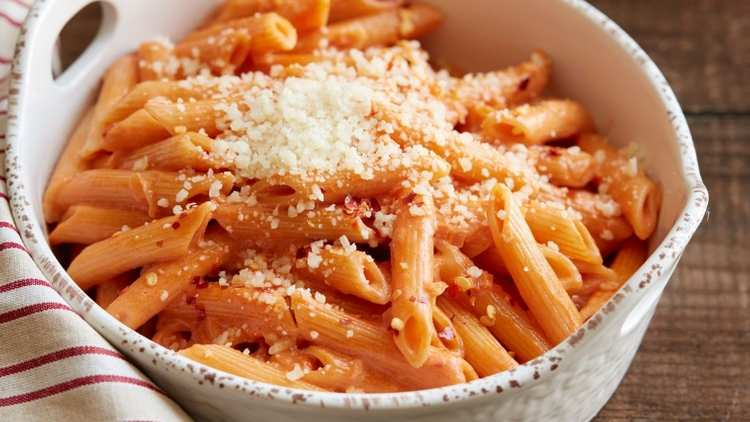

Penne ala Vodka

Penne alla vodka is a pasta dish made with
vodka and penne pasta,usually made with heavy cream, crushed tomatoes,
onions and sometimes even sausage or pancetta.
The dish bacame popular in Italy and the United States around the 1980s
when it was offered to discotheque customers.
Ingredients
- 455g penne
- 3 cloves Garlic, minced
- 1 Whole medium onion, finely chopped
- 3 tbsps butter
- 2 tbsps olive oil
- 1 cup vodka
- One tin, tomato puree, 395g
- 1 pinch red pepper flakes
- Salt
- Pepper
- Grated Parmesean, for serving
Steps
- Sauetee garlic and onions in butter and olive oil, until soft
- Carefully pour in the vodka
- Cook and reduce for 2-3 minutes, then pour in the tomato puree
- Stir till thouroughly combined, then reduce heat and pour in the heavy cream. Stirring to combine
- Turn heat to lowest possible simmer. Sprinkle red pepper flakes as well as salt and pepper to taste
- Stir in remaining 1 tbsp of butter
- Pour drained pasta into the sauce and toss to combine
- Plate and top off with grated parmesean and red pepper flakes
Home